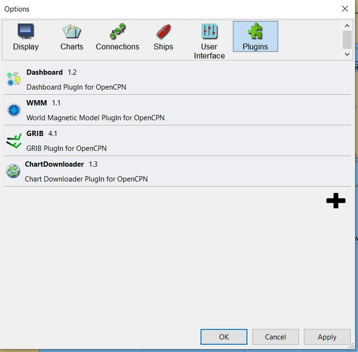
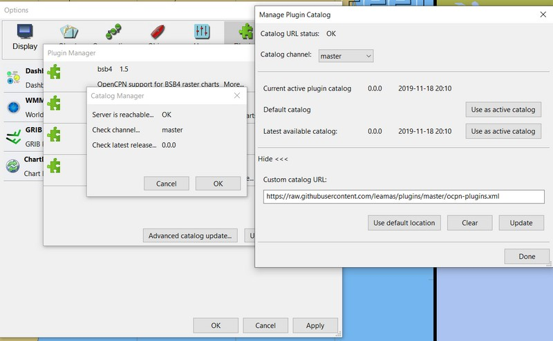

PI Manager Dev Procedure
-
Plugin Manager Github Wiki Extensive documentation
Build and Deploy
Deploy to "Beta" Repository
Code/logic for the cloudsmith repository to deploy to:
-
If a commit is made, deployment to Beta repository.
-
When Version is changed and 'git push –tag origin branch:branch' used, deployment to the Prod and Pkg repository.
-
Confirm untagged commits & builds are successful and pushed to your "Beta" Cloudsmith repository.
-
Confirm tagged version changes are successful and pushed to your "Prod" & "Pkg" Cloudsmith repository.
-
Include the main icon (svg preferred, but 64×64 png is ok) for use in the PI Installer. (only one required)
-
Copy your catalogs metadata (xml) and main icon to your local opencpn/plugins/metadata repository
-
Generate a local beta-ocpn-plugins.xml so that the uploaded tarballs can be tested and then push it up to your forked repository. See [[https://github.com/OpenCPN/plugins|Readme]] and read suggested steps below. (See process below)
-
Push your new beta-ocpn-pugins.xml catalog to your remote repository
"Beta" Test
-
PI Devs will not be testing all the PI OS versions, instead other beta testers will have to do that.
-
Plugin’s for specific OS’s will not be added to ocpn-plugins.xml until tested!
-
During the Test binary files will be in the "ocpn-plugins-beta" repository.
-
Notify beta testers via Cruiser Forum thread, providing links to Opencpn version and the beta-ocpn-plugins.xml
-
Beta testers need to load and test with their OS version of Opencpn with PI Installer using
-
Example: [[https://github.com/rgleason/plugins|https://github.com/rgleason/plugins]] using the beta-ocpn-plugins.xml file.
-
URL [eg] will be: [[https://raw.githubusercontent.com/rgleason/plugins/master/beta-ocpn-plugins.xml|https://raw.githubusercontent.com/rgleason/plugins/master/beta-ocpn-plugins.xml]]
-
Confirm the plugin loads and works properly.
-
Beta testers then notify acceptance via Cruiser Forum thread.
Deploy to "Prod" Repository
PLACEHOLDER NOTE
Cloudsmith OpenCPN Organization Plugin Repositories are one of the deployment resources used for Plugins. OpenCPN has a "Plugins Team" that accesses these repositories. Each plugin has three repositories:
-
ALPHA - Development, Retainage - Limit by 36 days, Limit by Count 27 packages, Limit by Size 0 disabled. ( Old packages will be deleted when new packages are synchronized. Retention is performed in the following order: By count, then by days, then by size.)
-
BETA - Testing Retainage - Limit by days 0 disabled, Limit by count 223 packages, Limit by Size 0 disabled. (See general comments above.)
-
PROD - Releases, Retainage - Limit by days 0 disabled, Limit by count 223 packages, Limit by Size 0 disabled. (See general comments above.) Generally, plugins that are deployed to the Plugin Manager should be located in this repository. The retainage for this repository should retain at least the 4 last releases. Currently each plugin has between 12-15 environments, each environment deploys a tarball and metadata file and may deploy one additional file (for deb linux, exe windows or pkg macos file). 15 environments x 3 files x 4 releases = 180 packages.
-
Test the Plugin again using your OS, it is your responsibility to make sure your plugin works properly and is "clean" code. - Change version in CMakeList.txt then push your tag in the same step as the commit. If you are working on the master branch the workflow should be something like this:
-
$ git commit -am "my last changes") $ git tag v[new version number] $ git push <repo-name> <tag-name> OR $ git push origin refs/tags/tag_a Not preferred: $ git push --tags origin master:master <--- Is not preferred due to pushing all old tags..
Example: 1. Change version number and date in CMakeLists.txt . Save 2. git add CMakeLists.txt 3. git commit -am "v1.9.5.10" 4. git tag v1.9.5.10 5. git push origin refs/tags/v1.9.5.10 Enumerating objects: 5, done. remote: Resolving deltas: 100% (2/2), completed with 2 local objects. To https://github.com/xxxx/weatherfax_pi.git * [new tag] v1.9.5.10 -> v1.9.5.10
-
The last step pushes the tag and the branch in one step, thus avoiding the problem of deployment being split between "prod" and "beta". It’s also much simpler. (All tags from your local clone are pushed to origin. If this is a problem they can also be removed.) - Deploy the release your "Prod" Cloudsmith repository.
-
Check the binary and catalog files deployed to your "Prod" Cloudsmith repository.
-
Copy your catalogs metadata (xml) and main icon to your local opencpn/plugins/metadata repository
-
Generate a local ocpn-plugins.xml so that the uploaded tarballs can be tested and then push it up to your forked repository. See Readme and read suggested steps below. (See process below)
-
Push your new ocpn-pugins.xml catalog to your remote repository
-
From inside OpenCPN use PI Installer to load your new ocpn-plugins.xml, then select your new plugin to load it.
-
Confirm the plugin loads and works properly.
-
Make a Pull Request of the new [plugin]catalog.xml files (typically 4 xml files) and an Icon file to https://github.com/OpenCPN/plugins from your forked opencpn-plugins directory.
-
If your release is acceptable it will then be published in the next update of the opencpn-plugin.XML and become available to the users.
-
Note: You can now create a meta-url in the Alpha branch (Catalog) which points to your own opencpn/plugins branch where you can make an ocpn_plugins.xml with all your current alpha metadata, which will appear for installation by alpha and beta testers when the Alpha catalog is picked and updated. This is very handy because it does not involve any PR and Merge by Dave.
-
-
Reversion
-
To revert to a previous version, make a PR to OpenCPN/plugins of the version you wish to revert to.
-
Email the lead developer.
PI Installer and Deployment
(Draft) How does the Plugin Developer test deployment and installation of their plugin … and the generated ocpn-plugins.xml?
There are three alternatives:
-
Combine the metadata by hand in an xml file with the name ocpn-plugins.xml and then point PI Installer at that file, however there is no reason at all to do it by hand.
-
Load an OpenCPN version built with the PI Installer and select the appropriate XML url.
-
The ocpn-metadata tool automates the use of a new XML file with correct urls. Such xml files are produced by the CI builds. A PI Dev can git clone OpenCPN/plugins, copy your cloudsmith repository’s modified XML files into the metadata/dir and run ocpn-metadata which then creates a new ocpn-plugins.xml. This is easier to automate and less error-prone.
-
You will need to have Python > v3.4
More Detail
-
Fork the opencpn-plugins https://github.com/OpenCPN/plugins to your github repository.
-
Use the master branch and copy/add the recently created xml and icons from cloudsmith.
-
Run the batch file or python file to make a local opencpn-plugins.xml (or do it by hand).
-
Test installation of the new plugin from the PI Installer using the subject Opencpn OS.
-
Point the PI Installer (Under Options>Plugins> Click on the red "+") and point the xml file to the appropriate url.
Plugin Installer activated at the "+"

PI Installer menu to Load a URL directly

-
Select your plugin for installation.
-
Confirm it installs and works properly.
Then, if ok, Deploy the Release to your "stable" Cloudsmith repository
-
with a new version number
-
with a Push Tag
Then, Make a PR to https://github.com/OpenCPN/plugins from your fork.
-
with your new xml metadata files, and icon so the plugin is included.